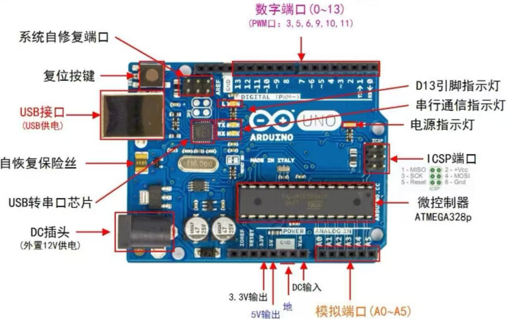
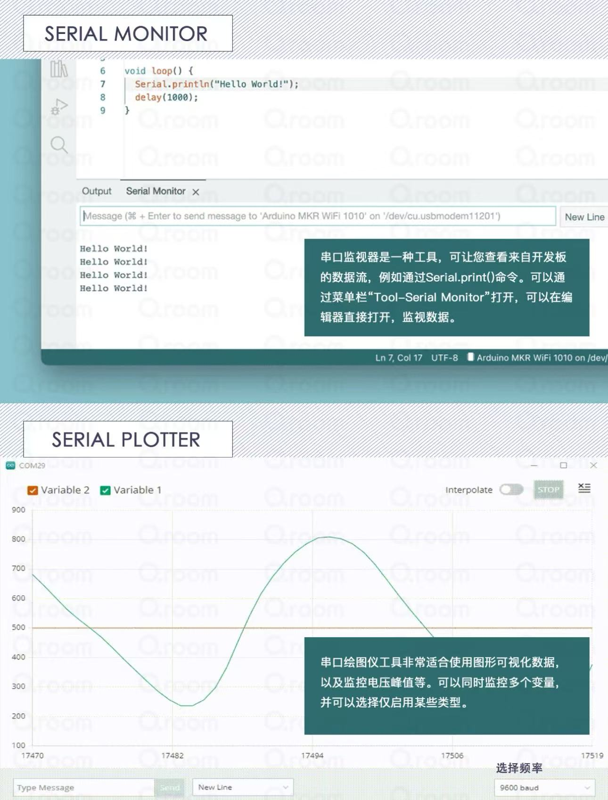
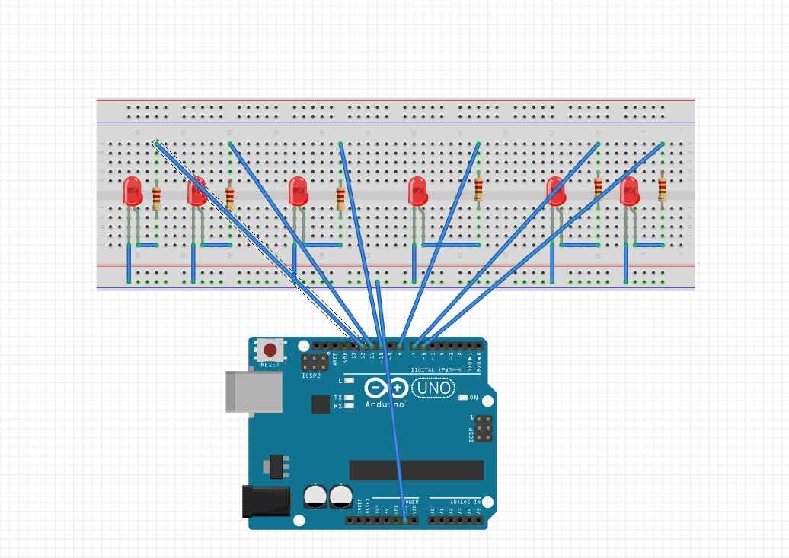

Exercise 2: Arduino Basics & Running Light
1. Learning Open-Source Hardware - Arduino

Arduino is an open-source electronic prototyping platform that includes hardware (various models of Arduino development boards) and software (Arduino IDE). Its core advantages are:
- Open Source & Free: Hardware design, software code, and schematics are all open source, allowing free modification and secondary development
- Low Barrier to Entry: Uses simplified C/C++ syntax, no need to delve into microcontroller low-level details, beginners can get started quickly
- Strong Ecosystem: Massive open-source libraries, sensor modules, and project cases worldwide, capable of realizing almost all electronic creativity
Common Application Scenarios:
- Teaching & Learning: Programming basics (C/C++, logic training), electronics basics (sensors, LEDs, motors, circuits), school courses, graduation projects
- Smart Home: Smart lighting, environmental monitoring, automatic control, safety alerts
- Interactive Art & Installations: Interactive light shows, new media art installations, stage/exhibition effects
- DIY Electronics: Electronic clocks, thermometers, Bluetooth/IR remote switches, wireless doorbells, simple 3D printers
- Industrial/Lab Applications: Data collection, simple automation control, IoT nodes
2. Arduino IDE
(1) Introduction
Arduino IDE is an integrated development environment for writing, uploading, and debugging programs based on the Arduino platform. It's an open-source tool that runs on Windows, Mac OS X, and Linux systems. It uses C/C++ language for coding, features a simple graphical interface, and includes a built-in code editor, compiler, uploader, and serial monitor.



(2) Coding Methods
- Program Structure: All Arduino programs contain two core functions.
setup()runs only once at startup for initialization;loop()runs infinitely after setup for core logic. - Comments: Single-line comments use
//, multi-line comments use/* */. - Variables: Supports int, float, char, boolean types. Variable names must start with a letter.
- Pin Operations: Core of hardware interaction. Use
pinMode()to set pin mode,digitalRead()to read pin state,digitalWrite()to control pin output. - Custom Functions: Create custom functions to encapsulate code logic.
- Library Files: Import official/third-party libraries via
#includefor quick implementation of servo control, I2C communication, sensor drivers, etc. - Serial Communication: Use Serial object for board-computer data interaction.
Serial.begin()initializes serial,Serial.print()sends data for debugging.
(3) Hardware Connection
- Board Connection: Connect Arduino board to computer via USB cable for program upload, serial communication, and basic power supply.
- External Circuit Connection: Connect sensors, LEDs, buttons via jumper wires to digital/analog pins. Must correctly distinguish VCC, GND, and signal lines. LEDs need 220Ω current-limiting resistors.
- Power Supply: High-power components like motors, large LEDs, servos need external battery or power adapter to avoid board damage.
- Program Upload: After coding and debugging in IDE, select corresponding board model and COM port, then upload program with one click.
- Debugging & Testing: After upload, view Serial output data in serial monitor to verify sensor values, pin states, and program logic.
3. Running Light Program
Running Light Implementation Code
// Define LED pins: 2, 3, 4, 5, 6, 7
int ledPins[] = {2, 3, 4, 5, 6, 7};
int ledCount = 6;
void setup() {
// Initialize all pins as output mode
for (int i = 0; i < ledCount; i++) {
pinMode(ledPins[i], OUTPUT);
}
}
void loop() {
// Light up from left to right
for (int i = 0; i < ledCount; i++) {
digitalWrite(ledPins[i], HIGH);
delay(150);
digitalWrite(ledPins[i], LOW);
}
// Light up from right to left
for (int i = ledCount - 2; i > 0; i--) {
digitalWrite(ledPins[i], HIGH);
delay(150);
digitalWrite(ledPins[i], LOW);
}
}

4. Case Studies
Case 1: "Emotion Aid" Project

Case Link: Arduino Blog - Emotion Aid
- Core Objective: Help people with communication barriers (especially autism spectrum) convey their emotional states to the outside world using devices instead of body language.
- Hardware Architecture: Arduino Uno Rev3 + Capacitive humidity sensor (EDA/GSR) + Temperature sensor + Pulse sensor + 9V battery power supply.
- Output Method: Small servo drives a fan-like device, changing its form to express emotions through intuitive physical "fanning" motions.
Advantages:
- Novel & Intuitive Output: Uses pure physical motion to express emotions rather than screens or lights, more friendly to sensory-sensitive individuals.
- Multi-modal Signal Fusion: Integrates EDA, body temperature, and heart rate signals, using "multi-modal fusion" to improve emotion inference robustness.
- Open Source & Community Friendly: Complete course design with code, circuit diagrams, and structural designs fully open-sourced on Instructables.
Disadvantages:
- Oversimplified Emotion Inference: Inferring complex human emotions solely from EDA, heart rate, and temperature is scientifically difficult and unrealistic.
- Rough Data Fusion: No effective noise reduction or feature extraction. Motion artifacts severely interfere with signals, ignoring individual physiological baseline differences.
- Suboptimal Wearing Position: Attached to underwear limits gender applicability and is greatly affected by breathing and body movement.
- Battery & Durability Issues: 9V battery has limited capacity, difficult to support long-term use and servo current requirements.
- Risk of Emotional Labeling: Emotions are crudely simplified into single modes. Wrong judgments may transmit incorrect information, causing social misunderstandings.
Case 2: UESTC Professor Xu Peng's Team - "Wireless Brain Function Assessment System"
Case Link: UESTC News - Brain Function Assessment
- Core Objective: Provide objective, quantitative auxiliary diagnosis and precise intervention solutions for autism, benefiting over 3,000 children domestically and internationally.
- Hardware Architecture: Based on wireless dry-electrode EEG cap (non-invasive) and targeted transcranial magnetic stimulator, no conductive gel required.
- Core Technology: Auxiliary diagnosis uses AI algorithms (deep learning, transfer learning) to identify brain network abnormalities (accuracy >90%); intervention precisely locates superficial nodes to indirectly regulate deep brain regions.
Advantages:
- Pioneered "Quantitative Diagnosis" Paradigm: Combines EEG signals with AI algorithms, transforming diagnosis from experience-based "qualitative judgment" to data-supported "quantitative diagnosis".
- "High Friendliness" Experience: Wireless dry-electrode EEG cap for diagnosis, short-duration treatment mode (3 times daily, 40 seconds each), greatly improving comfort and cooperation.
- "Deep Brain Region" Intervention Possibility: Targeted transcranial magnetic therapy indirectly regulates deep brain regions through superficial "relay stations", achieving over 80% effectiveness.
Disadvantages:
- High Technical Threshold & Cost: BCI and TMS equipment R&D and manufacturing costs are high, mainly targeting tertiary hospitals or professional rehabilitation institutions in the short term.
- Physiological Signal Limitations: EEG signals have low signal-to-noise ratio, susceptible to interference. Post-processing and AI model training require extremely high algorithm standards.
- Institutional Application Limitations: The entire system requires professional venue operation, difficult to serve as home daily intervention equipment.
- Long-term Safety & Effectiveness Pending Verification: Although effectiveness exceeds 80%, this evaluation mostly stems from short-term clinical observations.
- "Black Box" Problem: AI algorithm decision logic is opaque to humans. Doctors find it difficult to judge specific basis for AI conclusions, increasing diagnosis review difficulty.